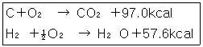
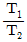
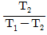
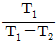
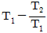
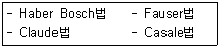
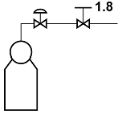
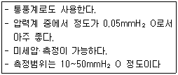
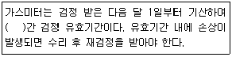

가스산업기사 (2007-03-04 기출문제)
1과목: 연소공학
1. 다음 중 연소반응과 직접 관계가 없는 것은?
- 연소열
- 점화에너지
- 중화열
- 발화온도
(정답률: 86%)

2. 최초의 완만한 연소가 격렬한 폭굉으로 발전할 때까지의 거리를 폭굉유도거리(DID)라 하는데 폭굉유도거리가 짧아지는 원인이 아닌 것은?
- 정상연소 속도가 큰 혼합가스일수록
- 관속에 방해물이 있을 때
- 관경이 가늘수록
- 압력이 낮을수록
(정답률: 79%)
3. 유동층 연소의 장점에 대한 설명으로 가장 거리가 먼 것은?
- 부하변동에 따른 적응력이 좋다.
- 광범위하게 연료에 적용할 수 있다.
- 질소산화물의 발생량이 감소된다.
- 전열면적이 적게 소요된다.
(정답률: 53%)
4. 이상기체를 정적 하에서 가열하면 압력과 온도의 변화는 어떻게 되는가?
- 압력증가, 온도상승
- 압력일정, 온도일정
- 압력일정, 온도상승
- 압력증가, 온도일정
(정답률: 87%)
5. 연소속도에 영향을 주는 인자로서 가장 거리가 먼 것은?
- 온도
- 활성화에너지
- 발열량
- 가스의 조성
(정답률: 49%)
6. 공기와 혼합하였을 때 폭발성 혼합가스를 형성할 수 있는 것은?
- NH3
- N2
- CO2
- SO2
(정답률: 82%)
7. 부탄가스의 공기 중 연소범위(%) 값을 가장 옳게 나타낸 것은?
- 1.9~8.5
- 2.7~9.5
- 2.4~10.3
- 5~15
(정답률: 83%)
8. 공기 20kg과 증기 5kg이 15m3의 용기 속에 들어있다. 만약 이 혼합가스의 온도가 50℃라면 혼합가스의 압력은 약 몇 kg/cm2인가? (단, 공기와 증기의 가스 정수는 각각 29.5, 47.0kg·m/kg·K이다)
- 0.39
- 0.99
- 1.27
- 1.78
(정답률: 29%)
9. 가연성 액체로부터 발생한 증기가 공기 중에서 연소범위 내에 있으면 그 표면에 불꽃을 접근시켰을 때 불이 붙는 필요 최저온도를 무엇이라 하는가?
- 인화점
- 발화점
- 착화온도
- 비점
(정답률: 82%)
10. 프로판(C3H8)의 표준 총발열량이 -530600cal/gmol 일 때 표준 진발열량은 몇 cal/gmol인가? (단, HO(L) → H2O(g), H=1⑤19cal/gmol이다.)
- -530600
- -488524
- -520081
- -430432
(정답률: 62%)
11. 액체연료의 연소형태와 가장 거리가 먼 것은?
- 분무연소
- 등심연소
- 분해연소
- 증발연소
(정답률: 76%)
12. 대기압 760mmHg 하에서 계기압력이 2atm이었다면 절대압력은 약 몇 PSI인가?
- 22.3
- 33.2
- 44.1
- 55.1
(정답률: 69%)
13. 표준상태에서 질소가스의 밀도는 몇 g/L인가?
- 0.97
- 1.00
- 1.07
- 1.25
(정답률: 74%)
14. 다음 중 연소 시 가장 낮은 온도를 나타내는 색깔은?
- 적색
- 백적색
- 황적색
- 휘백색
(정답률: 77%)
15. 100℃의 수증기 1kg이 100℃의 물로 응결될 때 수증기 엔트로피 변화량은 몇 KJ/K인가? (단, 물의 증발잠열은 2256.7KJ/kg이다)
- -4.87
- -6.⑤
- -7.24
- -8.67
(정답률: 66%)
16. “압력이 일정할 때 기체의 부피는 온도에 비례하여 변화한다.”라는 법칙은?
- 보일(Boyle)의 법칙
- 샤를(Charles)의 법칙
- 보일-샤를의 법칙
- 아보가드로의 법칙
(정답률: 80%)
17. 다음 설명 중 옳지 않은 것은?
- 화염속도는 화염면이 진행하는 속도를 말한다.
- 화염속도는 연소속도에 미연소가스의 전방이동속도를 합한 것이다.
- 어떤 물질의 화염속도는 그 물질의 고유상수이다.
- 연소속도는 미연소가스가 화염면에 직각으로 들어오는 속도를 말한다.
(정답률: 54%)
18. 메탄가스에 대한 설명 중 옳은 것은?
- 고온에서 수증기와 작용하면 반응하여 일산화탄소와 수소를 생성한다.
- 공기 중 메탄가스가 60% 정도 함유되어 있는 기체가 점화되면 폭발한다.
- 수분을 함유한 메탄은 금속을 급격히 부식시킨다.
- 메탄은 조연성 가스이기 때문에 유기화합물을 연소시킬 때 사용한다.
(정답률: 80%)
19. 다음의 반응식을 이용하면 프로판(C3H8) 1kg이 연소될 때의 발열량은 몇 kcal인가?

- 521
- 3513
- 11850
- 521400
(정답률: 57%)
20. 다음 설명 중 틀린 것은?
- 가스 폭발범위는 측정 조건을 바꾸면 변화한다.
- 점화원의 에너지가 약할수록 폭굉유도거리는 길다.
- 혼합가스의 폭발한계는 르 샤트리에 식으로 계산한다.
- 가스 연료의 점화에너지는 가스농도에 관계없이 결정된 값이다.
(정답률: 67%)
2과목: 가스설비
21. 접촉분해 공정에서 반응압력과 평형가스 조성과의 관계를 옳게 나타낸 것은?
- 압력이 상승하면 CH4, CO2 감소
- 압력이 상승하면 H2, CO 증가
- 압력이 내려가면 CH4, CO2 감소
- 압력이 내려가면 H2, CO 감소
(정답률: 43%)
22. 가로 15㎝, 세로 20㎝의 급기구에 목제 가리개를 설치한 경우 유효면적은 몇 cm2인가? (단, 개구율은 0.3이다)
- 60
- 90
- 150
- 300
(정답률: 76%)
23. 용접부 내부 결함검사에 가장 적합한 방법으로서 검사결과의 기록이 가능한 검사방법은?
- 자분검사
- 침투검사
- 방사선투과검사
- 누설검사
(정답률: 83%)
24. 다양한 기계에서 일을 하기 위해 발휘하는 힘 중 몇 %가 실제로 이용되는지 알려주는 값으로서 η=Le/Li 로 나타낼 수 있는 효율을 무엇이라고 하는가? (단, 기관에서 발생하는 마력은 Li, 실제로 이용되는 마력은 Le이다)
- 체적효율
- 기계효율
- 수력효율
- 이상효율
(정답률: 70%)
25. 산소제조장치에서 공기 중 CO2가스를 흡수하기 위하여 주로 사용되는 흡수제는?
- CH3COOH
- H2SO4
- NaOH
- H2O2
(정답률: 70%)
26. 축류펌프의 날개수를 증가시켰을 때 펌프성능에 주는 영향으로 옳은 것은?
- 양정이 일정하고 유량이 증가
- 유량이 일정하고 양정이 증가
- 유량과 양정이 모두 증가
- 유량과 양정이 모두 감소
(정답률: 53%)
27. 액화가스 공장에 내용적 25m의 저장탱크가 2개 설치되어 있다. 총 저장능력은 몇 톤인가? (단, 액화가스의 비중은 0.71이다)
- 31.95
- 35.50
- 50.00
- 63.40
(정답률: 37%)
28. 냉간가공과 열간가공을 구분하는데 기준이 되는 온도는?
- 끓는 온도
- 상용온도
- 재결정온도
- 섭씨 0도
(정답률: 83%)
29. Fisher식 정압기에서 2차압의 이상 상승원인이 아닌 것은?
- 가스 중 수분의 동결
- 2차압 조절관 파손
- 바이패스 밸브류의 누출
- 파이롯트 서플리밸브에서의 누설
(정답률: 41%)
30. 프로판(C3H8) 11g을 완전 연소시켰을 때 발생되는 이산화탄소는 표준 상태에서 약 몇 L인가?
- 5.6
- 16.8
- 22.4
- 39.2
(정답률: 49%)
31. 고온, 고압 하에서 수소를 사용하는 장치공정의 재질은 어느 재료를 사용하는 것이 가장 적당한가?
- 탄소강
- 크롬강
- 타프치동
- 실리콘강
(정답률: 81%)
32. 저온(T2)로부터 고온(T1)으로 열을 보내는 냉동기의 성능계수 산정식은?




(정답률: 67%)
33. 배관 내의 마찰저항에 의한 압력손실에 대한 설명으로 옳지 않은 것은?
- 관내경의 5승에 반비례한다.
- 유속의 제곱에 비례한다.
- 관의 길이에 반비례한다.
- 유체점도가 크면 압력손실이 크다.
(정답률: 65%)
34. 다음 중 플레어스택 용량 산정 시 가장 큰 영향을 주는 것은?
- 인터록 기구
- 긴급차단장치
- 내부반응 검사장치
- 긴급이송설비
(정답률: 38%)
35. 다음 중 정압기에 관한 설명으로 틀린 것은?
- 정압기는 2년에 1회 이상 분해점검을 실시한다.
- 불순물 제거장치는 정압기 출구측에 설치한다.
- 내부 응결수의 동결방지를 위해 방한 시공한다.
- 가스 공급의 중단방지를 위해 바이패스관을 설치한다.
(정답률: 66%)
36. 직류전철 등에 의한 누출전류의 영향을 받는 배관에 적합한 전기방식법은?
- 희생양극법
- 교호법
- 배류법
- 외부전원법
(정답률: 60%)
37. 20kg 용기(내용적 47L)를 3.1MPa 수압으로 내압시험 결과 내용적이 47.8L로 증가 하였다. 영구(항구)증가율은 얼마인가? (단, 압력을 제거하였을 때 내용적은 47.1L이었다)
- 8.3%
- 9.7%
- 11.4%
- 12.5%
(정답률: 62%)
38. 다음은 어떤 가스의 합성법을 나열한 것인가?

- 아세틸렌
- 프로판
- 이산화탄소
- 암모니아
(정답률: 61%)
39. 탄화수소에서 아세틸렌가스를 제조할 경우의 반응에 대한 설명으로 옳은 것은?
- 탄화수소 분해반응 온도는 보통 1000~3000℃이고, 고온일수록 아세틸렌이 많이 생성된다.
- 원료나프타는 방향족계가 가장 좋다.
- 반응압력은 저압일수록 아세틸렌이 적게 생성된다.
- 중축합 반응을 촉진시켜 아세틸렌 수율을 높인다.
(정답률: 57%)
40. 압축기의 압축비에 대한 설명 중 옳은 것은?
- 압축비는 고압측 압력계의 압력을 저압측 압력계의 압력으로 나눈 값이다.
- 압축비가 적을수록 체적효율은 낮아진다.
- 흡입압력 흡입온도가 같으면 압축비가 크게 될 때 토출가스의 온도가 높게 된다.
- 압축비는 토출가스의 온도에는 영향을 주지 않는다.
(정답률: 51%)
3과목: 가스안전관리
41. 지름이 각각 8m인 LPG 저장탱크사이에 물분무장치를 하지 않은 경우 탱크사이에 유지해야 되는 간격은?
- 1m
- 2m
- 4m
- 8m
(정답률: 64%)
42. 연소기구에 접속된 고무관이 노후되어 직경 0.5㎜의 구멍이 뚫려 수주 280㎜의 압력으로 LP가스가 5시간 누출하였을 경우 LP가스 분출량은 약 몇 L인가? (단, LP가스의 분출압력 280mmH2O 에서 비중은 1.7로 한다)
- 144L
- 166L
- 180L
- 204L
(정답률: 35%)
43. 차량에 고정된 탱크를 운행 중 주차할 필요가 있을 경우에 제1종 보호시설로부터의 최소 이격 주차거리는?
- 10m
- 15m
- 20m
- 30m
(정답률: 62%)
44. 도시가스공급시설 또는 그 시설에 속하는 계기를 장치하는 회로에는 온도 및 압력과 그 시설의 상황에 따라 안전 확보를 위한 주요부분에 설비가 잘못 조작되거나 이상이 발생하는 경우에 자동으로 원료의 공급은 차단시키는 장치를 무엇이라고 하는가?
- 긴급차단장치
- 안전제어장치
- 인터록장치
- 가스차단장치
(정답률: 69%)
45. 아황산가스에 대한 설명으로 옳지 않은 것은?
- 물에 용해되어 산성이 된다.
- 공기 중의 농도가 0.5~1.0ppm일 때 감각적으로 그 소재를 알 수 있다.
- 30~40ppm일 때 호흡이 곤란하게 된다.
- 50~100ppm일 때 짧은 시간에 생명이 위험하게 된다.
(정답률: 37%)
46. 일정 기준 이상의 고압가스를 적재 운반 시는 운반책임자가 동승해야 하는데 운반책임자의 동승기준으로 틀린 것은?
- 가연성 압축가스 : 300m3 이상
- 조연성 압축가스 : 600m3 이상
- 독성 액화가스 : 1000kg 이상
- 가연성 액화가스 : 4000kg 이상
(정답률: 74%)
47. 차량에 고정된 독성가스 탱크의 내용적은 몇 L를 초과하지 않아야 하는가?
- 1000
- 3000
- 12000
- 18000
(정답률: 80%)
48. 아세틸렌용기의 신규검사 항목이 아닌 것은?
- 외관검사
- 다공도시험
- 기밀시험
- 내압시험
(정답률: 47%)
49. 충전용기(30L 이하의 용접용기) 집적에 의한 액화석유가스 저장소에서 용기의 단위 집적량은 몇 톤을 초과하지 않아야 하는가?
- 20
- 25
- 30
- 50
(정답률: 53%)
50. 다음 중 가연성가스 또는 산소를 운반하는 차량에 휴대하여야 하는 소화기로 옳은 것은?
- 포말소화기
- 분말소화기
- 화학포소화기
- 간이소화제
(정답률: 85%)
51. 어떤 실내에 메탄이 공기 중 폭발한계인 5.0%가 존재하는 경우 혼합공기 1m3에 함유된 메탄의 중량은 약 얼마인가? (단, 표준상태 기준이며, 메탄은 이상기체로 간주한다)
- 35.7g
- 357.0g
- 24.4g
- 244.0g
(정답률: 42%)
52. 1일간 처리능력이 25000m3인 산소 저장설비 외면과 주택과는 몇 m 이상의 안전거리를 유지하여야 하는가?
- 8
- 9
- 11
- 13
(정답률: 50%)
53. 액화석유가스의 안전관리 및 사업법상 “다중이용시설”에 해당하지 않는 것은?
- 유통산업발전법에 의한 대형점, 백화점, 쇼핑센터
- 항공법에 의한 공항의 여객청사
- 한국마사회법에 의한 경마장
- 문화재보호법에 의하여 지정문화재로 지정된 건축물
(정답률: 68%)
54. 산소, 수소 및 아세틸렌의 품질검사에서 순도는 각각 얼마 이상이어야 하는가?
- 산소 : 99.5%, 수소 : 98.0%, 아세틸렌 : 98.5%
- 산소 : 99.5%, 수소 : 98.5%, 아세틸렌 : 98.0%
- 산소 : 98.0%, 수소 : 99.5%, 아세틸렌 : 98.5%
- 산소 : 98.5%, 수소 : 99.5%, 아세틸렌 : 98.0%
(정답률: 83%)
55. 고압가스제조자 또는 고압가스판매자가 실시하는 용기의 안전점검 및 유지관리기준 중 틀린 것은?
- 용기는 도색 및 표시가 되어 있는지의 여부를 확인할 것
- 용기 캡이 씌어져 있거나 프로텍터가 부착되어 있는지의 여부를 확인할 것
- 용기의 재검사시간의 도래여부를 확인할 것
- 유통 중 열영향을 받았는지 여부를 점검하고, 열영향을 받은 용기는 재 도색 할 것
(정답률: 74%)
56. 용기 내부에서 가연성가스의 폭발이 발생할 경우 그 용기가 폭발압력에 견디고 접합면, 개구부 등을 통하여 외부의 가연성가스에 인화되지 아니하도록 한 구조는?
- 내압방폭구조
- 유입방폭구조
- 압력방폭구조
- 특수방폭구조
(정답률: 84%)
57. 고압가스용기에 의한 운반의 기준으로 틀린 것은?
- 200km 이상의 거리를 운행할 경우 중간에 충분한 휴식을 취한 후 운행한다.
- 고압가스운반 시 고압가스의 명칭, 성질 및 이동 중 재해방지를 위한 필요한 주의사항을 구두로 교육한다.
- 고압가스 운반 시 운반책임자와 운전자가 동시에 차량에서 이탈하여서는 안 된다.
- 노면이 나쁜 도로는 가능한 한 운행하지 않아야 한다.
(정답률: 75%)
58. 용기의 각인 기호에 대해 잘못 나타낸 것은?
- V : 내용적
- W : 용기의 질량
- TP : 기밀시험압력
- FP : 최고충전압력
(정답률: 79%)
59. 프로판가스의 폭발 위험도는 약 얼마인가?
- 3.5
- 12.5
- 15.5
- 20.2
(정답률: 75%)
60. 액체염소가 누출된 경우 필요한 조치가 아닌 것은?
- 소석회의 살포
- 가성소다의 살포
- 중화제 살포 후 폴리에틸렌 sheet로 덮음
- 물의 살포
(정답률: 80%)
4과목: 가스계측
61. 회로의 두 접점 사이의 온도차로 열기전력을 일으키고 그 전위차를 측정하여 온도를 알아내는 온도계는?
- 열전대온도계
- 저항온도계
- 광고온도계
- 방사온도계
(정답률: 86%)
62. 그림과 같이 실린더에 압축된 가스가 같은 온도, 동일압력조건에서 밸브를 통해 대기로 방출된다고 할 때, 다음 기체 중 가장 많이 누출되는 가스는?

- 헬륨(He)
- 질소(N2)
- 아르곤(Ar)
- 이산화탄소(CO2)
(정답률: 65%)
63. 가스조정기(Regulator)의 역할에 대한 설명으로 가장 옳은 것은?
- 용기 내로의 역화를 방지한다.
- 용기 내의 압력이 급상승할 경우 정상화한다.
- 가스를 정제하고 유량을 조절한다.
- 공급되는 가스의 압력을 연소기구에 적당한 압력까지 감압시킨다.
(정답률: 71%)
64. 저급탄화수소의 분석용으로 사용되는 게겔법에서 CO2의 흡수액은?
- 87% H2SO4
- 알칼리성 피롤카롤용액
- 33% KOH용액
- 옥소수은 칼륨용액
(정답률: 76%)
65. 비중량이 910kg/m3인 기름 20L의 무게는 약 몇 kg인가?
- 15.4
- 18.2
- 19.1
- 19.8
(정답률: 63%)
66. 오리피스, 플로노즐, 벤츄리 유량계의 공통점은?
- 직접식
- 초음속 유체만의 유량측정
- 압력강하 측정
- 열전대를 사용
(정답률: 83%)
67. 측정 범위가 넓어 탄성체 압력계의 교정용으로 주로 사용되는 압력계는?
- 벨로즈식 압력계
- 다이어프램식 압력계
- 부르돈관식 압력계
- 표준 분동식 압력계
(정답률: 68%)
68. 계량기의 감도가 좋으면 어떠한 변화가 오는가?
- 측정시간이 짧아진다.
- 측정범위가 좁아진다.
- 측정범위가 넓어지고, 정도가 좋다.
- 폭 넓게 사용할 수 가 있고, 편리하다.
(정답률: 74%)
69. 국제단위계(SI단위계 : The International System of Unit)의 기본단위인 것은?
- 질량(kg)
- 진동수(Hz)
- 압력(Pa)
- 일(J)
(정답률: 47%)
70. 배관장치에서 이상상태가 발생한 경우 제어기능을 갖는 안전제어장치를 설치하여야 한다. 이 때 “이상상태가 발생한 경우”가 아닌 것은?
- 가스누출경보기가 작동하였을 때
- 유량계로 측정한 유량이 정상운전시의 유량보다 10% 이상 증가하였을 때
- 압력계로 측정한 압력이 정상운전시의 압력보다 30% 이상 강하하였을 때
- 압력계로 측정한 압력이 상용압력의 1.1배를 초과하였을 때
(정답률: 38%)
71. 가스계량기의 설치장소로 부적당한 곳은?
- 전기계량기와는 15cm 떨어진 위치
- 화기와는 2m 이상의 우회거리를 유지한 곳
- 직사광선 또는 빗물을 받을 우려가 없는 곳
- 설치높이는 바닥으로부터 1.6m 이상 2m 이내
(정답률: 84%)
72. 계통적 오차에 대한 설명 중 옳지 않은 것은?
- 오차의 원인을 알 수 없어 제거할 수 없다.
- 측정 조건변화에 따라 규칙적으로 생긴다.
- 참값에 대하여 치우침이 생길 수 있다.
- 계기오차, 개인오차, 이론오차 등으로 분류된다.
(정답률: 75%)
73. 유속이 6m/s인 물속에 피토(Pitot)관을 세울 때 수주의 높이는 몇 m인가?
- 0.54
- 0.92
- 1.63
- 1.83
(정답률: 61%)
74. 가스분석계를 화학적 가스분석계와 물리적 가스분석계로 나눌 때 화학적 가스분석계에 해당되는 방법은?
- 가스의 자기적 성질을 이용한다.
- 흡수용액의 전기전도도를 이용한다.
- 가스의 밀도, 점도를 이용한다.
- 고체 흡수제를 이용한다.
(정답률: 45%)
75. 측정지연 및 조절지연이 작을 경우 좋은 결과를 얻을 수 있으며 제어량의 편차가 없어질 때까지 동작을 계속하는 제어동작은?
- 적분동작
- 비례동작
- 평균2위치동작
- 미분동작
(정답률: 50%)
76. 다음 보기에서 설명하는 액주식 압력계의 종류는?

- U자관 압력계
- 단관식 압력계
- 경사관식 압력계
- 링밸런스 압력계
(정답률: 70%)
77. 막식 가스미터에 있어 계량막의 파손, 밸브의 탈락, 밸브시트에서의 누설 등이 발생하여 고장이 생겼을 때 일어나는 고장형태는?
- 부동(不動)
- 기차불량
- 불통(不通)
- 누설
(정답률: 34%)
78. 온도가 60°F 에서 100F 까지 비례 제어된다. 측정온도가 71°F에서 75°F로 변할 때 출력압력이 3psi에서 15psi로 도달하도록 조정될 때 비례대역(%)은?
- 5%
- 10%
- 20%
- 33%
(정답률: 64%)
79. 다음 ( ) 안에 알맞은 것은?

- 1년
- 2년
- 3년
- 5년
(정답률: 65%)
80. 다음 중 회전자식 가스미터는?
- 막식미터
- 루트미터
- 벤츄리미터
- 델타미터
(정답률: 63%)